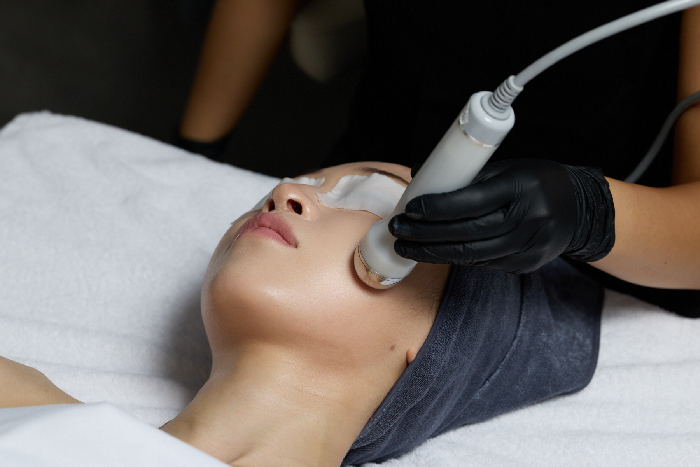

고객의 고통을
관찰하며 만든 브랜드A brand built by
listening to suffering通过观察客户痛苦
而创立的品牌お客様の痛みを
観察して生まれたブランド
치유인청담의 대표 테라피스트는 15년이 넘는 임상 경험 속에서 한 가지 공통점을 발견했습니다. 반복적으로 찾아오는 여드름, 홍조, 예민 피부를 가진 고객들의 문제는 '얼굴'에 있지 않다는 것이었습니다.Through over 15 years of clinical practice, the lead therapist discovered a common thread: clients with recurring acne, chronic redness, and persistent sensitivity shared the same truth — their problem did not originate in the face.在超过15年的临床经验中，首席治疗师发现了一个共同点：反复出现痘痘、慢性红潮和持续敏感的客户们，问题并不在于"脸部"本身。15年以上の臨床経験を通じて、主任セラピストは一つの共通点を発見しました。繰り返すニキビ・赤み・敏感肌の問題は、「顔」にはなかったのです。
피부과를 수십 번 방문하고, 에스테틱도 꾸준히 다녔지만 나아지지 않던 이유 — 그것은 몸 전체의 열(熱) 흐름을 보지 않았기 때문입니다. 치유인청담은 이 통찰에서 출발하여, 동양의 열 이론과 현대 해부학을 결합한 독자적인 케어 시스템을 개발했습니다.Dozens of clinic visits, consistent esthetic treatments, and yet no lasting improvement — because no one was looking at the body's heat circulation. From this insight, Chiyou In Cheongdam developed a proprietary care system merging Eastern heat theory with modern anatomy.去了数十次皮肤科，坚持进行美容护理，却始终没有持久改善——因为没有人着眼于身体整体的热量流动。何十回も皮膚科を訪れ、エステにも通い続けたが改善しない理由——それは体全体の熱の流れを見ていなかったからです。
해부학 기반 수기 테크닉Anatomy-Based Manual Technique基于解剖学的手技解剖学に基づく手技
근육 구조, 림프 흐름, 지방층까지 이해한 정밀 수기로 자연스러운 윤곽과 지속 가능한 리프팅을 실현합니다.Precision therapy informed by muscle structure, lymph flow, and fat layer positioning for natural contouring and lasting lift.深入理解肌肉结构、淋巴流动和脂肪层，实现自然轮廓和持久提拉。筋肉構造・リンパ・脂肪層を理解した精密な手技で自然なリフトアップを実現。
임상 중심 문제성 피부 케어Clinical Approach to Problematic Skin临床为中心的问题肌肤护理臨床中心の問題肌ケア
여드름 피부도 윤곽 관리가 가능한 유일한 공간. 진단→접근→진정→회복 단계별 솔루션.The only space where acne-prone skin can receive contouring. Diagnosis → approach → calm → recovery.即使是痘痘肌也可以接受轮廓管理的唯一空间。ニキビ肌でもフェイスラインケアができる唯一の空間。
글로벌 응대 시스템International Guest Experience国际服务系统グローバル対応システム
영어·중국어·일본어 상담 가능. 여행자, 거주자, 유학생을 위한 맞춤 예약 시스템.English, Chinese & Japanese consultations available. Tailored booking for travelers, residents, and students.提供英语、中文、日语咨询。为旅行者、居民和留学生量身定制的预约系统。英語・中国語・日本語対応可能。旅行者・居住者・留学生向けの予約システム。